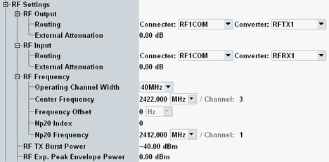

The RF settings configure the RF routing, RF power and RF frequency.

The following parameters configure the RF output path of the R&S CMW.
Selects the output path for the generated RF signal, that means the output connector and the TX module.
Depending on your hardware configuration, there are dependencies between both parameters.
Remote command:Defines the value of an external attenuation (or gain, if the value is negative) in the output path. With an external attenuation of x dB, the power of the generated signal is increased by x dB. The actual generated levels are equal to the displayed values plus the external attenuation.
If a correction table for frequency-dependent attenuation is active for the chosen connector, then the table name and a button are displayed. Press the button to display the table entries.
The following parameters configure the RF input path of the R&S CMW.
Selects the input path for the measured RF signal, i.e. the input connector and the RX module to be used.
Remote command:Defines the value of an external attenuation (or gain, if the value is negative) in the input path. The power readings of the R&S CMW are corrected by the external attenuation value.
The external attenuation value is also used in the calculation of the maximum input power that the R&S CMW can measure.
If a correction table for frequency-dependent attenuation is active for the chosen connector, then the table name and a button are displayed. Press the button to display the table entries.
The following parameters configure the frequency of the generated signal.
Same setting as "Operating Channel Width".
Determines the center frequency of the generated WLAN signal and of the RF analyzer.
You can set the frequency either directly or via a valid channel number. For a list of WLAN channels, see http://en.wikipedia.org/wiki/List_of_WLAN_channels.
Remote command:Positive or negative frequency offset to be added to the specified channel center frequency in receive direction.
Remote command:This setting is displayed for signals with more than 20 MHz bandwidth. The total bandwidth consists of several adjacent 20-MHz channels, half of them above the center frequency of the signal and the other half below the center frequency.
The index selects which of the 20-MHz channels is the primary channel. The lowest index value refers to the 20-MHz channel with the lowest frequency.
Remote command:These settings are displayed for signals with more than 20 MHz bandwidth. They determine the center frequency of the primary 20-MHz channel.
The settings are coupled to the "Center Frequency / Channel" setting (center frequency of total bandwidth) and to the "Np20 Index".
To configure the frequencies of the 20-MHz channels and of the total bandwidth, set the "Np20 Index" and one of the other settings ("Center Frequency / Channel" or "Np20 Frequency / Channel").
Remote command:Sets the power of the transmitted bursts.
Remote command:Specifies the expected peak envelope power of the measured RF signal. It must account for the transmitted (average) uplink power plus the crest factor.
An expected PEP setting below the actual RF input power causes overflow in the input path. A setting which is much higher than the RF input power can reduce the measurement accuracy.
An optimum expected PEP setting results in an "Approximate RX Burst Power" value that is slightly higher than the "RX power Indicator" value. Both values are displayed in the main view.
The actual input power at the connectors must be within the level range of the selected RF input connector. Refer to the data sheet for details.
Remote command: